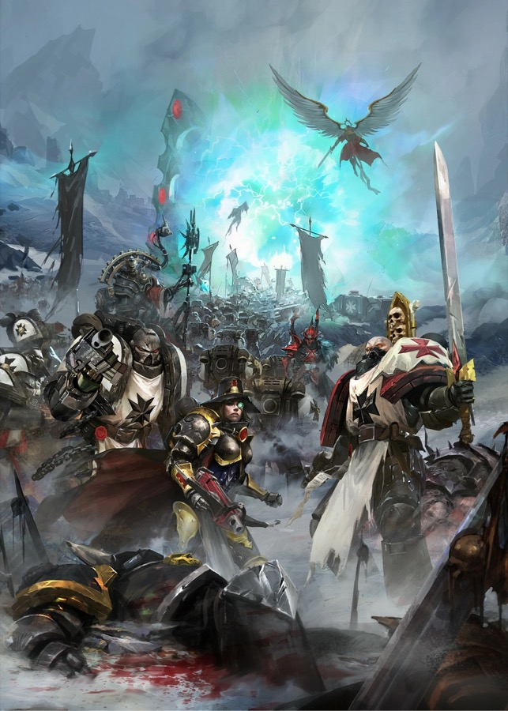

Marius Amalrich
| Marius Amalrich | |
|---|---|
| Marshal of the Black Templars | |
 Amalrich, sword raised, with the survivors of Cadia on Klaisus Artwork © Games Workshop | |
| Emperor's Champion of the Black Templars | |
| Tenure | c. 999.M41, named after the return of Roboute Guilliman, until his death on the Terran Crusade |
| Allegiance | Imperium of Mankind |
| Chapter | Black Templars |
| Known for | The defence of Kasr Kraf on Cadia; the stabbing of Skarbrand the Exiled One |
| Wargear | The ''Armour of Faith''; the ''Black Sword'' |
| Died | During the Terran Crusade, aboard a Blackstone Fortress in the Maelstrom |
Marius Amalrich was a Marshal of the Black Templars Chapter of the Adeptus Astartes. He played a major part in the final days of the 13th Black Crusade before the Fall of Cadia. He also took part in the Celestinian Crusade that restored the primarch Roboute Guilliman, and in the Terran Crusade that Guilliman led to meet his father, the Emperor of Mankind, on Holy Terra.[1]
After Guilliman's return, a new Black Templars Crusade arrived at Macragge to support him. Amalrich was honoured for his service, and the Chapter's Chaplains named him the Emperor's Champion. During a critical moment of the Terran Crusade, aboard a Blackstone Fortress in the Maelstrom, Amalrich drove the ''Black Sword'' of the Emperor's Champion through the chest of the Bloodthirster Skarbrand the Exiled One. The blow cost him his life, but Guilliman was able to use the wound to defeat the Greater Daemon of Khorne and escape the trap set by Kairos Fateweaver.[2]
Defence of Cadia
[edit]Amalrich commanded the Cruxis Crusade of the Black Templars. He diverted it to Cadia to defend that Fortress World in the final stage of Abaddon's 13th Black Crusade. He placed his warriors among the Astra Militarum on the Loyalist line south of Kasr Kraf. He doubted the mortal troops could hold alone.[1]
When the southern spur of the Martyr's Rampart collapsed, the Black Templars alone held the line, while the Guard fell back. The Black Legion and Word Bearers attacked the Rampart with chainswords and hellfire. Battle-brothers fell one or two at a time, and their Crusade banner toppled many times. Each time it was raised higher.[1]
When the Chaos assault moved north to the Kriegan Gates, Amalrich admitted that the Black Templars would have been better used on the walls. He ordered the Rampart abandoned. The one surviving Thunderhawk of the Cruxis Crusade carried the warriors into the heart of the enemy at the Kriegan Gates. The Traitor Baneblade ''Vicanthrus'' would have slain Amalrich and his Astartes, were it not for the Necron Lord Trazyn the Infinite, who was covertly aiding the defenders. His nano-machines reprogrammed the tank's machine spirit to turn on its own fellow servants of the Dark Gods.[1]
Kasr Kraf held after the arrival of the Living Saint Saint Celestine and the defeat of the Daemon Prince Urkanthos. Amalrich and his warriors were then sent to defend the Cadian Pylons of the Elysion Fields, on the southern perimeter beside Captain Tor Garadon of the Imperial Fists. The Chosen of Abaddon and the Black Legion were too many and simply swept around them. When Belisarius Cawl activated the pylons and cut the region off from the Warp, Abaddon the Despoiler was forced to retreat, and Amalrich's warriors killed many Traitors as they tried to flee.[1]
Abaddon's fail-safe was to hurl the Blackstone Fortress ''Will of Eternity'' down onto Cadia, which doomed the world to be swallowed by the Eye of Terror. Amalrich's Black Templars and the Battle-Sisters of the Order of Our Martyred Lady were the last to leave. The survivors, led by Cawl, Celestine, Inquisitor Katarinya Greyfax and Amalrich, called themselves the Celestinian Crusade. They fled at sub-light speed through the Cadian System with the Chaos fleets in pursuit, and reached the ice moon Klaisus, where the Aeldari Ynnari rescued them through a hidden Webway gate.[1]
Resurrection and the Terran Crusade
[edit]Amalrich's Crusade fought in the shrine where Guilliman's body lay in stasis. The Celestinians, the Ultramarines and the Black Templars were suspicious of the Eldar and the Tech-priest who sought to restore the Primarch. Amalrich held back the Chaos assault until the Primarch awoke, and paid a high price: he was the only warrior of the original Black Templars contingent from Cadia to survive the battle in the shrine.[2]
After Guilliman's return, the Black Templars reunited with Amalrich on the planet's surface. Their Chaplains declared him touched by the hand of the Emperor. He was given the ''Armour of Faith'' and the ''Black Sword'' of the Emperor's Champion. He then joined the Terran Crusade to the Throneworld. He was brought aboard the Strike Cruiser ''Scourge of Heretics'' to be armed for the office.[2]
Death
[edit]When the Lord of Change Kairos Fateweaver captured Guilliman aboard the ''Macragge's Honour'', Amalrich held a breach into the ship's enginarium alone. He was beaten unconscious by a mob of Red Corsairs and taken prisoner.[2]
The prisoners were taken to a Blackstone Fortress given to the Red Corsairs by Abaddon. With the help of Sylandri Veilwalker and Cypher, Roboute Guilliman and his followers broke out and fought through daemons of Khorne and Tzeentch towards a Webway gate at the fortress's heart. There the Bloodthirster Skarbrand the Exiled One broke through a portal, and his fury drove the Space Marines to recklessness. Amalrich and the last Black Templars threw themselves at the Khornate host, and Amalrich fought Skarbrand with the ''Black Sword'' against the daemon's twin axes. He drove the blade through the Bloodthirster's chest, and it was the only trace of him that Guilliman saw afterwards. Skarbrand leapt across a gulf of the chamber with the wound still bleeding. Guilliman used the blade as a target, and a bolt destroyed it. The Bloodthirster's torso was torn apart and he fell. Guilliman escaped into the Webway on the way to Holy Terra.[2]
Wargear
[edit]As Emperor's Champion Amalrich wore the ''Armour of Faith'', the artificer Power armour traditionally given to the Champion. It is the finest armour the Chapter has, inscribed with sacred wards and litanies of hatred. His weapon was the ''Black Sword'', a massive two-handed power sword blessed by the Chaplains, which can be used in one hand or two. The Chapter holds only ten such swords.[3]
Timeline
[edit]| Date | Event |
|---|---|
| c. 999.M41 | The 13th Black Crusade reaches Cadia; Amalrich defends the Martyr's Rampart at Kasr Kraf |
| c. 999.M41 | Guilliman is restored in the Celestinian Crusade; Amalrich is named Emperor's Champion |
| c. 999.M41 | During the Terran Crusade, Amalrich is captured by the Red Corsairs, and dies in a Blackstone Fortress after wounding Skarbrand |